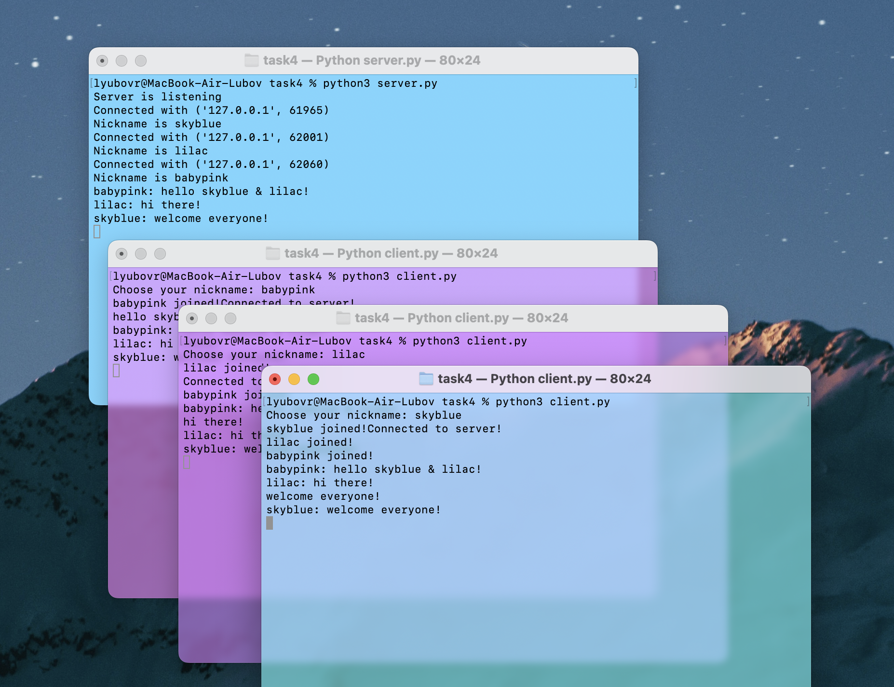

task 4
server.py
# Импорт всяких библиотек
import socket
import threading
# Создаём сокет для сервера
server = socket.socket(socket.AF_INET, socket.SOCK_STREAM)
# Привязываем сервер к локальному хосту и порту 9090
server.bind(('localhost', 9090))
# Начало прослушивания сокета
server.listen()
# Создаём список клиентов
clients = []
# Функция для отправки сообщения всем клиентам
def broadcast(message):
for client in clients:
client.send(message)
# Обработчик клиента
def handle(client):
while True:
try:
# Прием сообщения от клиента
message = client.recv(1024)
if message:
# Отправка сообщения всем клиентам
broadcast(message)
print(message.decode('utf-8'))
except:
continue
# Функция для приема новых клиентов
def receive():
while True:
client, address = server.accept()
print("Подключение с {}".format(str(address)))
# Отправка клиенту запроса на выбор никнейма
client.send('nickname'.encode('utf-8'))
nickname = client.recv(1024).decode('utf-8')
clients.append(client)
print("Никнейм: {}".format(nickname))
# Отправка сообщения о подключении нового клиента всем клиентам
broadcast("{} присоединился!".format(nickname).encode('utf-8'))
client.send('Подключено к серверу!'.encode('utf-8'))
# Запуск потока для обработки сообщений клиента
thread = threading.Thread(target=handle, args=(client,))
thread.start()
print("Сервер слушает")
receive()
client.py
import socket
import threading
# Ввод никнейма
nickname = input("Выберите никнейм: ")
# Создание клиентского сокета и подключение к серверу
client = socket.socket(socket.AF_INET, socket.SOCK_STREAM)
client.connect(('localhost', 9090))
# Функция для приема сообщений
def receive():
while True:
try:
# Прием сообщения от сервера
message = client.recv(1024).decode('utf-8')
if message == 'nickname':
# Отправка никнейма серверу
client.send(nickname.encode('utf-8'))
else:
print(message)
except:
break
# Функция для отправки сообщений
def write():
while True:
message = '{}: {}'.format(nickname, input(''))
client.send(message.encode('utf-8'))
# Запуск потока для приема сообщений
receive_thread = threading.Thread(target=receive)
receive_thread.start()
# Запуск потока для отправки сообщений
write_thread = threading.Thread(target=write)
write_thread.start()
